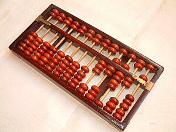

Inicio
Introducción a los Sistemas de Cómputo
Sistema Operativo
Base de Datos
Base de Datos pt.2
Redes
Desarrollo Web y HTML
Info Grupo
Evolución de los sistemas de Calculo
Ábaco: Serie de alambres paralelos, sujetos por los extremos en un armazón rectangular, sobre los que se pueden desplazar una serie de bolas o fichas.
ÁBACO

Regresar